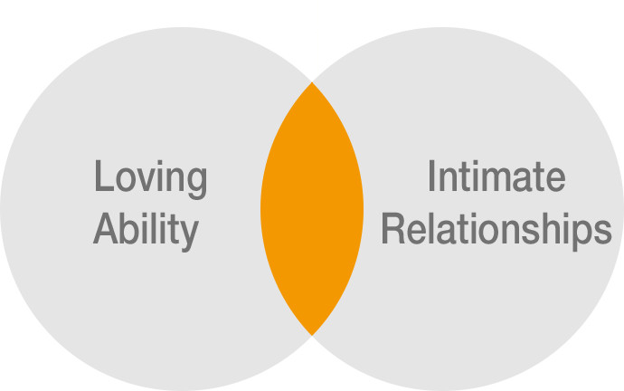
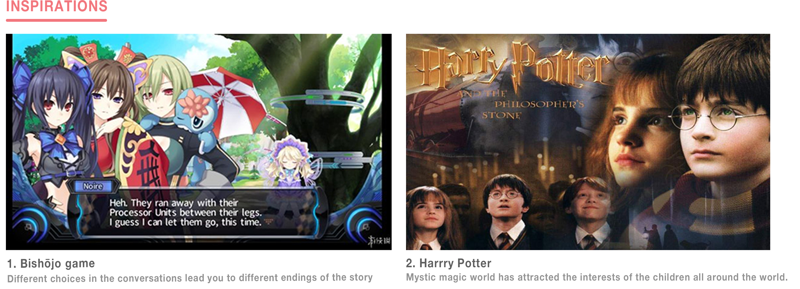
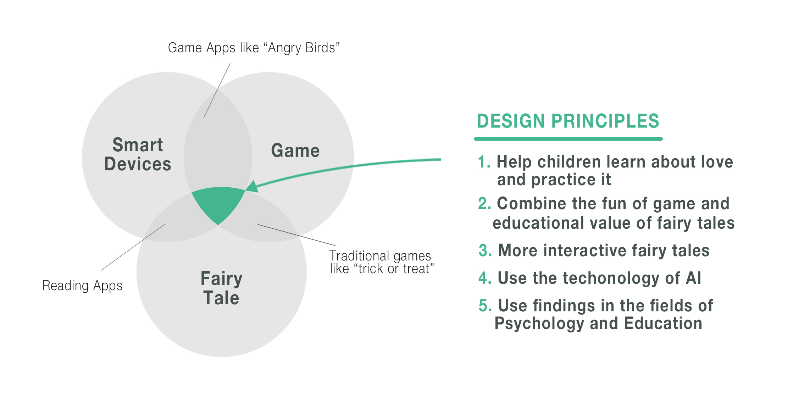

Design Brief
The theme of the hackathon is AI for Love.
Territory Exploration
Our team decided to focus on the love for children. With the knowledge in psychology, I took the task of further secondary research on this topic, We were astonished at the statistics of how seriously teenagers have suffered from mental health problems shown on the picture on the right.
The good news is that some psychological research has discovered the positive effect of love on mental health. Trauppman et al. (1981) conducted a study exploring the effects of intimacy on mental and physical health. The results showed that those who were happier and more satisfied in their relationships showed lower levels of depression, anxiety and self-consciousness.
“Love isn't something natural. Rather it requires discipline, concentration, patience, faith, and the overcoming of narcissism. It isn't a feeling, it is a practice.”
― Erich Fromm, The Art of Loving
Initial Question
How can we help children better cultivate these?
General Research
1. Smart devices are playing a more important role in children’s lives. We can see them in different sences, such as education, entertainment and so on. Due to the short-term and long-term benefits, children can’t live without them
2. Parents are worried about their physical and mental health under too much exposure of the digital world.
3. Fairy tales used to be a major source for both entertainment and education for children, but it is losing its power. Games are becoming more popular among children.
Focused Question
How might a product related to smart devices, games and fairy tales help children cultivate the loving ability and intimate relationships which assures the parents' worries properly and meets the children's needs?
Synthesis

